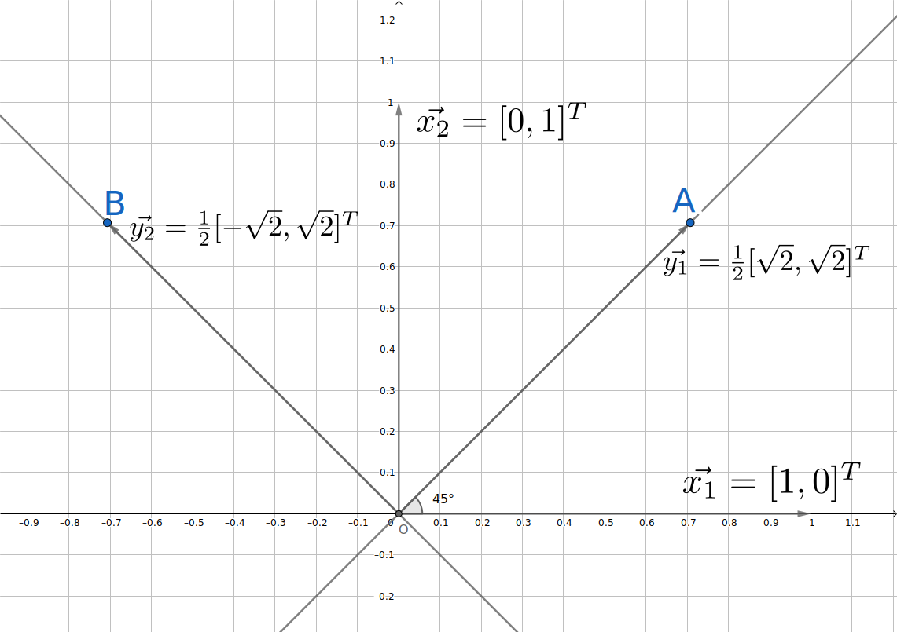

其实是坐标轴在动。
线性代数与坐标变换
之前写过一篇把椭圆扶正，使用到坐标变换，但没有深入原理，很久前就想做一个关于坐标变换的总结，遂成此文。
矩阵相乘的一种几何意义 -- 抽象的证明
设有一向量组\(\overrightarrow{\alpha_1},\overrightarrow{\alpha_2},\overrightarrow{\alpha_3}\dots\)（列向量）构成空间中的一组基，任意一个向量\(\overrightarrow{x}\)可以被该向量组唯一线性表示，这个唯一表示称为坐标，设\(\overrightarrow{x}\)在该基底下的坐标为\((x_1,x_2,x_3\dots)^T\)，即\(\overrightarrow{x}=x_1\overrightarrow{\alpha_1}+x_2\overrightarrow{\alpha_2}+x_3\overrightarrow{\alpha_1}+\dots\)，或者用矩阵描述为：
其中\(A=[\overrightarrow{\alpha_1},\overrightarrow{\alpha_2},\overrightarrow{\alpha_3}\dots]\)，
可以这样考虑：首先有一个原坐标系，其基底为
这个坐标系基底是默认的，我们通常不加定义就直接使用了，上面的\(\overrightarrow{\alpha_i}\)就是这个默认坐标系下的坐标。
一个满秩矩阵\(A\)定义了一个新的坐标系，矩阵中每一个列向量就是新坐标系的坐标轴在原坐标系下的坐标，用这个矩阵左乘以一个列向量，相当于把这个列向量描述的新坐标系下的点转换成用原坐标系的坐标来描述。
更加一般的情况下的证明如下：设两个满秩方阵：
两矩阵中的列向量各自构成空间的基底，并设\(B\)中各列向量在\(A\)中的坐标依次为\(\overrightarrow{p_1},\overrightarrow{p_2},\overrightarrow{p_3}\dots\)，记矩阵\(P=[\overrightarrow{p_1},\overrightarrow{p_2},\overrightarrow{p_3}\dots]\)，用矩阵表示为：
再设某一向量再\(A\)坐标系下的坐标为\(\overrightarrow{x}\)，在\(B\)坐标系下的坐标为\(\overrightarrow{y}\)，那么：
而根据假设，\(A,B,P\)均为满秩矩阵，所以：
这便是说：用坐标系\(B\)的基底在\(A\)下的坐标依次排列构成矩阵\(P\)，再用这个矩阵\(P\)去左乘某点在\(B\)下的坐标\(\overrightarrow{y}\)，就能把该点坐标变换到\(A\)中来描述。这是同一个点在不同坐标系下的描述。
上述矩阵\(P\)称为从\(A\)到\(B\)的过渡矩阵。从\(A\)到\(B\)意味着对\(A\)的什么东西施加作用可以变到\(B\)，而从\((1)\)式可以知道这是这里斜体的什么东西是坐标系的基底，所以过渡矩阵这个称呼是从基底的变换关系来看的。
其实命名这种事完全可以反着来，比如如果从坐标的变换关系来看，根据\((2)\)式，可以认为\(P\)是从\(B\)到\(A\)的过渡矩阵。一切只是惯例问题。
上面的说法太抽象了，来点具体的。
具象化的例子
看一个二维的情况。

如上图所示，原坐标系的两个基向量为\(\overrightarrow{x_1}\)、\(\overrightarrow{x_2}\)，把它们正向旋转\(\pi/4\)角度后得到两个新的向量\(\overrightarrow{y_1}\)、\(\overrightarrow{y_2}\)，新向量构成新坐标系的基底，记原坐标系为\(x\)坐标系，新坐标系为\(y\)坐标系（之所以不使用惯用的\((x,y)\)来描述平面点，是为了向高维推广）。
根据图示及以上结论，把\(y\)坐标系的基向量在\(x\)坐标系下的坐标依序排列，可写出从\(x\)坐标系到\(y\)坐标系的过渡矩阵为：
点A在\(y\)坐标系下的坐标为：
那么A在\(x\)坐标系下的坐标便用\(P\)左乘上面的坐标得到，即：
从图形上可以知道这是正确的结果，一般地，对于其他的点也是适用的。
对于本例中两个新坐标系基底正交且为单位向量的情况，可以使用复数相乘旋转或使用极坐标系作为中介的方式获得，人懒，这里不写了。
小结
- 过渡矩阵的说法是从基底的变换关系来定义的，过渡矩阵右乘原坐标系的基底得到新坐标系基底，或者换一种说法：过渡矩阵是新坐标系基底在原坐标系下的坐标。
- 过渡矩阵左乘新坐标系下的坐标得到同一点在原坐标系下的坐标描述。
再扯远一点 -- 谈谈惯例的事
小结中的两条结论是在列向量惯例1下得到的，如果采用行向量惯例，那么结论中的左乘和右乘应互相调换。
那么我们为什么又习惯采用列向量惯例呢，一种可能的原因是写成列向量：
更占空间，看起来篇幅更长（手动划掉）。
-
指把向量写成一列的习惯。 ↩